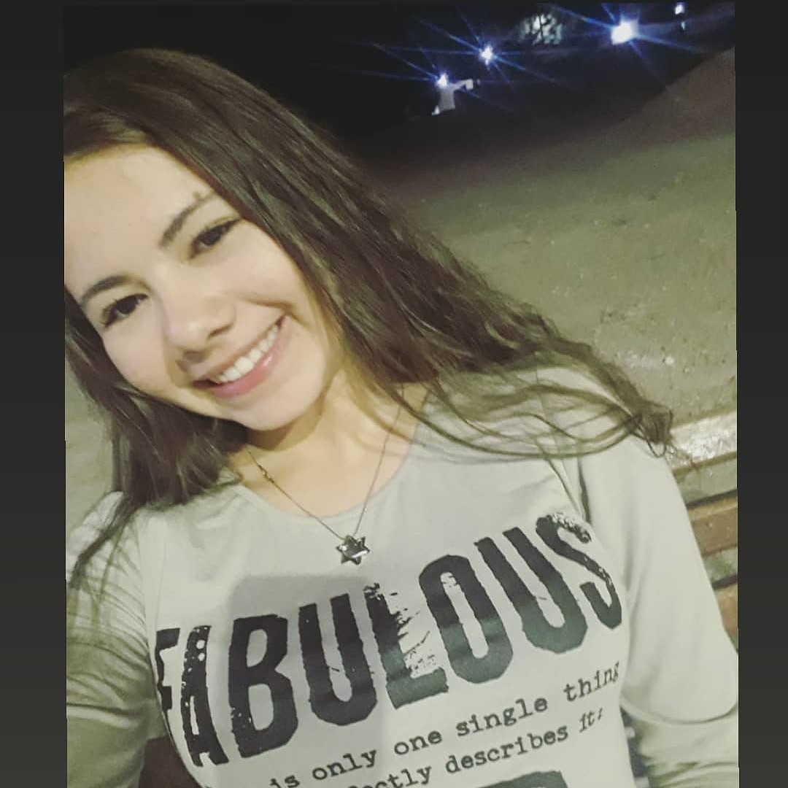

SAIBA MAIS
Sobre mim
Habilidades
Galeria
Contato
Sejam bem vind@s a minha página pessoal
Olá! Meu nome é Ruth Mendes, tenho 18 anos e altualmente sou aluna da escola Labenu que é de desenvolvimento Full Stack.
